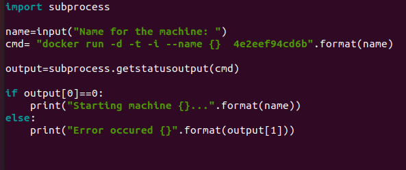
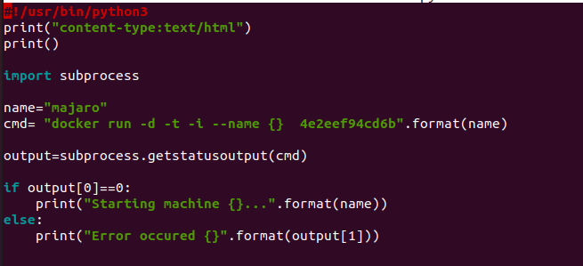
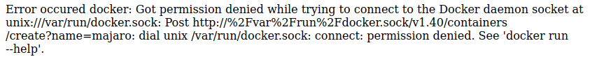

Integrating
Let's create a script to run the docker image

-d : To detach it and run the docker container in background
-t : To get terminal of machine
-i : To get interactive terminal
~~~~~~~~~~~~~~~~~~~~~~~~~~~~~~~~~
Now next task is to run the same thing over server using cgi feature
so we made a program

but now we getting the error
